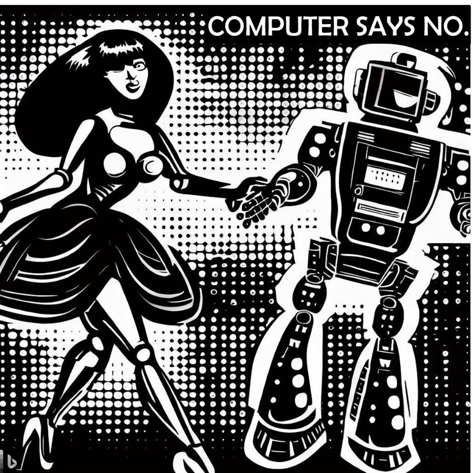

The Empathic Algorithm — Leveraging AI for Next-Level CX

That opening line sets the tone for everything that follows. This book explores not just the application of AI to automation but delves into the softer aspect of 'empathy' — often overlooked yet vital for impactful customer experience.
Note: This book was written in 2023 when ChatGPT 4 was state of the art. The AI landscape has moved considerably since — which, in many ways, makes the book's core argument about empathy and human-centred design even more urgent.
As the world evolves beyond the profound impacts of the COVID-19 pandemic, the transformative power of technology has come to the forefront. Whether you're an entrepreneur adapting to shifts in customer behaviour or a seasoned executive reimagining business strategy, this book is a tool to leverage AI for a deeper connection with your customers.
This is a comprehensive guide for businesses navigating the new normal, where digitization has ceased to be an option and become a necessity. It offers insights into the mind of the customer and the evolution of CX in the AI era — from leveraging AI for cost reduction to creating revenue growth.